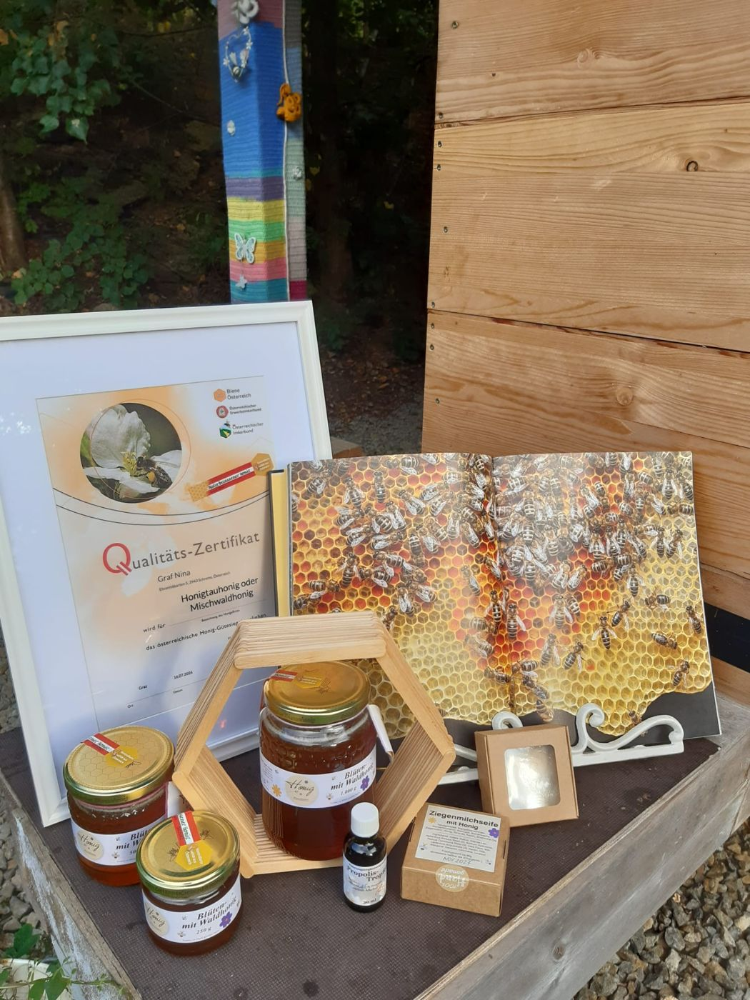
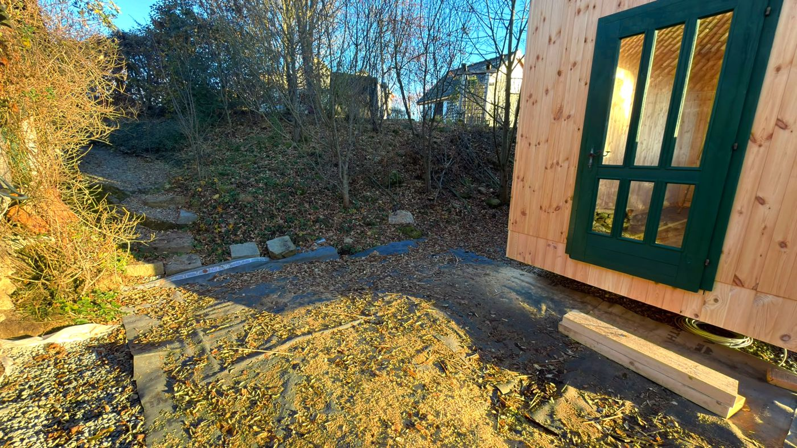
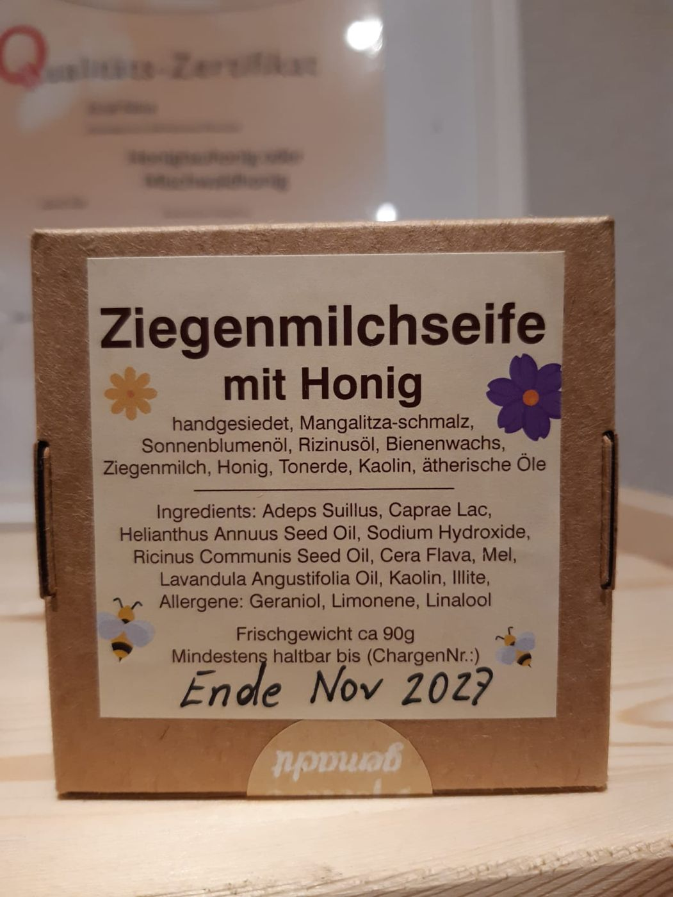
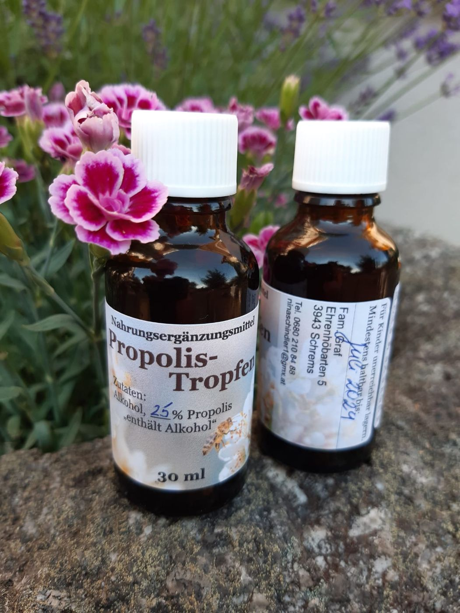

GütesiegelWald-Blütenhonig
Naturbelassen, einmal im Jahr geerntet – ein kräftig-blumiger Honig aus Blüten- und Waldtracht des Waldviertels.
- 250 g5 €
- 500 g10 €
- 1 kg18 €
Familie Graf · Ehrenhöbarten · Waldviertel
In unserer Bienenluft-Hütte atmen Sie die warme, duftende Luft aus dem Inneren unserer Bienenstöcke – ein ruhiger Moment mitten in der Natur.
Unser Herzstück
Im Inneren eines Bienenstocks herrscht ein ganz eigenes Klima: warm, feucht und erfüllt vom Duft nach Bienenwachs, Honig, Propolis und Blütenpollen. Genau diese Luft können Sie bei uns einatmen.
Dafür haben wir eine eigene Bienenluft-Hütte aus Holz gebaut. Darin stehen unsere Bienenstöcke – Sie sitzen gemütlich daneben, lauschen dem gleichmäßigen Summen und atmen ganz entspannt durch.
Die Luft wird über ein geschlossenes System aus dem Stock zu Ihrer Atemmaske geführt. Mit den Bienen selbst kommen Sie dabei nicht in Berührung – sie bleiben ungestört, und Sie auch.
Nina Graf hat die Schulungen zum beecura®-System absolviert. Bienenluft ist ein Naturerlebnis zum Entspannen und Genießen.
Rufen Sie uns einfach an – wir finden gemeinsam einen passenden Termin.
Wir begrüßen Sie bei uns am Hof, zeigen Ihnen die Hütte und erklären alles in Ruhe.
Lehnen Sie sich zurück, atmen Sie die Bienenluft und lassen Sie das Summen auf sich wirken.
Bienenluft gibt es in der warmen Jahreszeit, wenn unsere Völker aktiv sind. Dauer und Preise auf Anfrage.
Über uns
Wir, Nina und Herbert Graf, wohnen im oberen Waldviertel in Ehrenhöbarten. Unsere Liebe zur Natur hat uns 2019 zu ganz besonderen Tieren geführt – den Honigbienen. Heute betreuen wir neun Bienenvölker, und sie begeistern uns jeden Tag aufs Neue.
Für uns steht das Wohl der Bienen an erster Stelle. Sie dürfen ihre natürlichen Instinkte voll ausleben. Wir entnehmen nur einmal im Jahr Honig und lassen immer so viel davon im Stock, wie die Völker für den Winter brauchen. Unsere Bienen überwintern auf ihrem eigenen Honig – nicht auf Zuckerwasser.
Das merkt man: Vitale Völker kümmern sich intensiv um die Sauberkeit in ihrem Stock und sind widerstandsfähiger gegenüber Krankheiten und Schädlingen.
„Uti, non abuti!“

Für nur 1 kg Honig leisten die Bienen Unglaubliches:
Na, was sagt ihr? Genießt den süßen Moment – er ist kostbar!
Aus unseren Bienenstöcken
Alles in kleinen Mengen, direkt von unseren eigenen Bienen. Erhältlich bei uns am Hof oder per Post.

GütesiegelNaturbelassen, einmal im Jahr geerntet – ein kräftig-blumiger Honig aus Blüten- und Waldtracht des Waldviertels.
Von den Bienen eingelagerter, fermentierter Blütenpollen aus den Waben.
Nahrungsergänzungsmittel

Handgesiedet mit Ziegenmilch, Honig und Bienenwachs, ca. 90 g.

Propolis aus unseren Bienenstöcken, in Alkohol gelöst.
Nahrungsergänzungsmittel · enthält Alkohol
Geprüfte Qualität
Unser Honig wird jedes Jahr im Labor untersucht. Für das Gütesiegel gelten strengere Grenzwerte als gesetzlich vorgeschrieben – und unser Honig erfüllt sie deutlich.
Untersucht wurde die Ernte 2026 von der Steirischen Imkerschule in Graz.
Je weniger Wasser, desto reifer und haltbarer der Honig.
Kontakt & Bestellung
Ob Bienenluft-Termin oder Honigbestellung – melden Sie sich einfach, Anfragen sind jederzeit möglich.